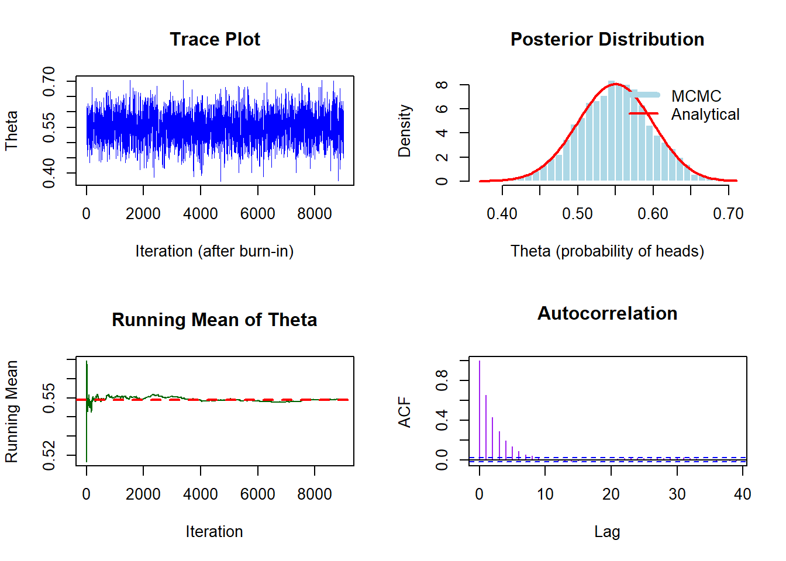

# Metropolis Algorithm for Coin Flip Inference
# 100 flips: 55 heads, 45 tails
# Prior: Beta(1,1) which is uniform(0,1)
# Set seed for reproducibility
set.seed(123)
# Define observed data
n_flips <- 100 # Total number of coin flips
n_heads <- 55 # Observed number of heads
n_tails <- 45 # Observed number of tails (or n_flips - n_heads)
# Define parameters for Metropolis algorithm
n_iterations <- 10000 # Number of MCMC iterations
burn_in <- 1000 # Number of initial iterations to discard
proposal_sd <- 0.1 # Standard deviation for proposal distribution
# Initialize storage for samples
samples <- numeric(n_iterations) # Vector to store sampled theta values
current_theta <- 0.5 # Starting value for theta (probability of heads)
# Define the prior distribution (Beta distribution)
# Beta(1,1) is uniform over [0,1], so density is 1 for all valid thetas
prior_density <- function(theta) {
if (theta < 0 || theta > 1) return(0) # Prior is 0 outside [0,1]
dbeta(theta, 1, 1) # Beta(1,1) density (always equals 1 for theta in [0,1])
}
# Define the likelihood function (binomial probability)
likelihood <- function(theta) {
# Binomial likelihood: P(data|theta) = theta^{heads} * (1-theta)^{tails}
# Using dbinom for numerical stability
dbinom(n_heads, size = n_flips, prob = theta)
}
# Define the posterior density (up to proportionality constant)
posterior_density <- function(theta) {
prior_density(theta) * likelihood(theta) # Prior * Likelihood
}
# Metropolis algorithm main loop
for (i in 1:n_iterations) {
# 1. Propose a new candidate value
# Use normal distribution centered at current theta
# Note: This can propose values outside [0,1]
proposed_theta <- rnorm(1, mean = current_theta, sd = proposal_sd)
# 2. Calculate acceptance ratio
# Ratio of posterior densities: P(proposed)/P(current)
# If proposed theta is invalid (outside [0,1]), posterior is 0
if (proposed_theta < 0 || proposed_theta > 1) {
acceptance_ratio <- 0 # Reject proposals outside valid range
} else {
acceptance_ratio <- posterior_density(proposed_theta) /
posterior_density(current_theta)
}
# 3. Accept or reject the proposal
# Generate uniform random number for acceptance decision
u <- runif(1)
if (u < acceptance_ratio) {
current_theta <- proposed_theta # Accept proposal
}
# If u >= acceptance_ratio, keep current_theta (implicitly)
# 4. Store the current theta value
samples[i] <- current_theta
}
# Discard burn-in samples
post_burn_samples <- samples[(burn_in + 1):n_iterations]
# Calculate posterior summary statistics
posterior_mean <- mean(post_burn_samples)
posterior_median <- median(post_burn_samples)
posterior_sd <- sd(post_burn_samples)
# Calculate 95% credible interval
credible_interval <- quantile(post_burn_samples, c(0.025, 0.975))
# Display results
cat("=== Metropolis Algorithm Results ===\n")=== Metropolis Algorithm Results ===cat("Observed data: ", n_heads, "heads out of", n_flips, "flips\n")Observed data: 55 heads out of 100 flipscat("Posterior mean (probability of heads):", round(posterior_mean, 4), "\n")Posterior mean (probability of heads): 0.5492 cat("Posterior median:", round(posterior_median, 4), "\n")Posterior median: 0.5496 cat("Posterior standard deviation:", round(posterior_sd, 4), "\n")Posterior standard deviation: 0.0495 cat("95% Credible Interval: [",
round(credible_interval[1], 4), ", ",
round(credible_interval[2], 4), "]\n", sep = "")95% Credible Interval: [0.4511, 0.6446]# For comparison: Analytical solution with Beta-Binomial conjugacy
# Prior: Beta(1,1), Likelihood: Binomial(100, theta)
# Posterior: Beta(1 + 55, 1 + 45) = Beta(56, 46)
analytical_mean <- 56 / (56 + 46)
analytical_sd <- sqrt((56 * 46) / ((56 + 46)^2 * (56 + 46 + 1)))
cat("\n=== Analytical Solution (for comparison) ===\n")
=== Analytical Solution (for comparison) ===cat("Beta(56, 46) posterior\n")Beta(56, 46) posteriorcat("Analytical mean:", round(analytical_mean, 4), "\n")Analytical mean: 0.549 cat("Analytical SD:", round(analytical_sd, 4), "\n")Analytical SD: 0.049 # Plotting the results
par(mfrow = c(2, 2)) # Create 2x2 grid of plots
# 1. Trace plot (shows MCMC sampling path)
plot(1:length(post_burn_samples), post_burn_samples, type = "l",
xlab = "Iteration (after burn-in)", ylab = "Theta",
main = "Trace Plot", col = "blue", lwd = 0.5)
# 2. Histogram of posterior samples
hist(post_burn_samples, breaks = 30, probability = TRUE,
xlab = "Theta (probability of heads)",
main = "Posterior Distribution",
col = "lightblue", border = "white")
# Add analytical posterior density curve
curve(dbeta(x, 56, 46), add = TRUE, col = "red", lwd = 2)
legend("topright", legend = c("MCMC", "Analytical"),
col = c("lightblue", "red"), lwd = c(5, 2), bty = "n")
# 3. Running mean (shows convergence)
running_mean <- cumsum(post_burn_samples) / (1:length(post_burn_samples))
plot(1:length(post_burn_samples), running_mean, type = "l",
xlab = "Iteration", ylab = "Running Mean",
main = "Running Mean of Theta",
col = "darkgreen", lwd = 1)
abline(h = analytical_mean, col = "red", lty = 2, lwd = 2)
# 4. Autocorrelation plot
acf(post_burn_samples, main = "Autocorrelation",
xlab = "Lag", ylab = "ACF", col = "purple")
# Reset plot layout
par(mfrow = c(1, 1))
# Calculate effective sample size (ESS)
# ESS = n / (1 + 2*sum(autocorrelations))
# Rough estimate for demonstration
acf_vals <- acf(post_burn_samples, plot = FALSE)$acf
ess <- length(post_burn_samples) / (1 + 2 * sum(acf_vals[-1]))
cat("\nEffective Sample Size (approximate):", round(ess, 0), "\n")
Effective Sample Size (approximate): 1790